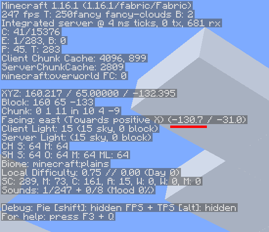
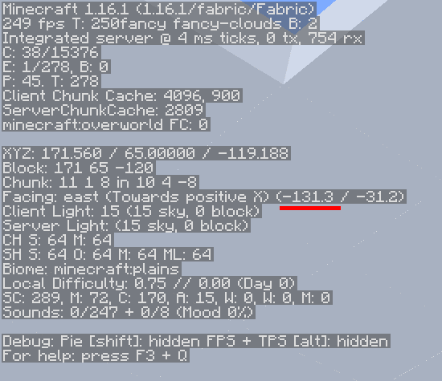
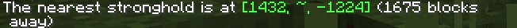

Manual
This tutorial is based on the speedrunning technique demonstrated in this video

The Stronghold Triangulation method uses two throws of an Eye of Ender from precise locations to form a right triangle, allowing you to use trigonometry to calculate the exact distance to the Stronghold.
Step 1: Preparation and First Throw
To make the math work, you must be able to view your in-game coordinates and angle.
1. Display F3 Data: Open your debug screen by pressing F3 (Java Edition). You need to note the Facing angle
2. The First Throw: Throw an Eye of Ender. As it hovers, quickly align the green vertical line of your crosshair with the left side of the floating Eye center pixels
3. Note the Angle: Record the precise angle measurement shown on the F3 screen. This is Angle 1 (e.g., -130.7 degrees)
Step 2: Set Up the Right Triangle
1. Turn 90 Degrees: Rotate exactly 90 degrees from your first measured angle (Angle 1). This ensures you are creating a right triangle (a triangle with a 90-degree angle).
○ Example: If Angle 1 was -130.7 degrees, your new direction should be -130.7 + 90 = 40.7 degrees.
2. Travel 17.5 Blocks: Travel precisely 17.5 blocks in this new 90-degree direction..
○ Estimating 17.5 blocks
■ Sprint Jumps: Completing four and a half sprint jumps is a common way to estimate this distance
Step 3: Second Throw and Calculation
The second throw gives you the final piece of data needed for the calculation.
1. The Second Throw: Throw another Eye of Ender from your new position (17.5 blocks away). Align your crosshair with the center of the Eye and record the new angle. This is Angle 2 (e.g., -131.3 degrees).
2. Calculate Angle Variance (V): Find the absolute difference between the two angles. This difference is the angle of your triangle that corresponds to the Stronghold location.
○ Formula: Angle change = |Angle 1 - Angle 2|
○ Example: |-130.7 - -131.3| = 0.6 degrees
3. Calculate Distance (D): Now divide 1000 / Angle change
○ If your variance is 1 degree, the Stronghold is approximately 1000 blocks away
○ For our example 1000/0.6 = 1666.667 and the stronghold ends up being 1675 blocks away
Step 4: Final Search and Dig-Down
Travel the calculated distance (D) in the direction of your second Eye of Ender's path.
1. Final Triangulation: Once you've traveled the estimated distance, you must pinpoint the exact chunk.
○ Turn on chunk barriers by pressing F3 + G and throw pearls until you locate the exact chunk
2. Dig Down: The Eye of Ender points toward the Stronghold's starting staircase, not the End Portal room.
○ The starter staircase will be centered on chunk coordinates 4, 4 so digging there will guarantee you find the stronghold.